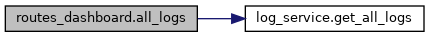
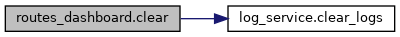
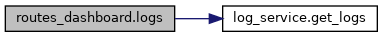
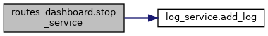

|
Robot Asistente para estimulación cognitiva de personas mayores v1.0
Sistema asistente con visión, voz e interfaz de usuario
|
Functions | |
| def | start_service (str service) |
| Arranca un servicio del sistema. More... | |
| def | stop_service (str service) |
| Detiene un servicio del sistema en ejecución. More... | |
| def | status () |
| Obtiene el estado actual de todos los servicios. More... | |
| def | logs (str service) |
| Recupera los logs específicos de un servicio. More... | |
| def | clear (str service) |
| Vacía el historial de logs de un servicio. More... | |
| def | all_logs () |
| Recupera el historial completo de logs globales. More... | |
Variables | |
| router = APIRouter(tags=["Dashboard"]) | |
| def routes_dashboard.all_logs | ( | ) |
Recupera el historial completo de logs globales.
Reúne los registros de todas las aplicaciones e interacciones del sistema en un solo volcado de datos.

| def routes_dashboard.clear | ( | str | service | ) |
Vacía el historial de logs de un servicio.
Elimina todos los registros guardados en memoria o disco para reiniciar el historial de la app.
| service | Nombre o identificador del servicio cuyo log se desea limpiar. |

| def routes_dashboard.logs | ( | str | service | ) |
Recupera los logs específicos de un servicio.
Obtiene el historial de acciones y comandos ejecutados relacionados con la aplicación solicitada.
| service | Nombre o identificador del servicio a consultar. |

| def routes_dashboard.start_service | ( | str | service | ) |
Arranca un servicio del sistema.
Lanza el subproceso correspondiente a la aplicación solicitada mediante el servicio de procesos y registra la acción en el historial de logs.
| service | Nombre o identificador del servicio a arrancar (ej: 'calculator', 'browser'). |
| def routes_dashboard.status | ( | ) |
Obtiene el estado actual de todos los servicios.
Consulta qué aplicaciones del sistema están activas (en ejecución) o detenidas en este momento.
| def routes_dashboard.stop_service | ( | str | service | ) |
Detiene un servicio del sistema en ejecución.
Finaliza el proceso activo del servicio indicado y añade el evento al registro de logs.
| service | Nombre o identificador del servicio a detener. |

| routes_dashboard.router = APIRouter(tags=["Dashboard"]) |